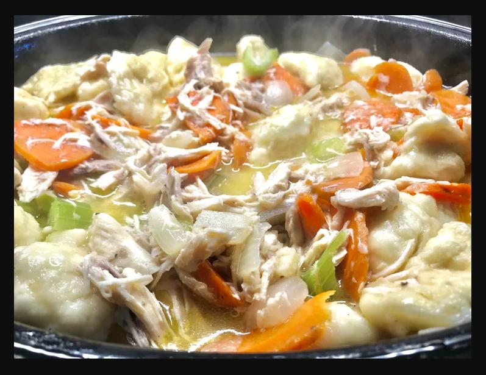

Chickem Noodle Soup
Chicken and Dumpling Soup

Description
Chicken and dumpling soup is a chicken broth based soup with hand made dumplings and shredded chicken
carrots and celery.
prep time: 15 minutes
Cook Time: 45 minutes
Total Time: 1 hour
Servings: 20
Ingredients
- 2 lbs Shredded Chicken
- 4 cups Chicken Stock
- 2 Onions
- 3 celery stalks
- 2 Carrots
- Salt and Pepper to taste
- 1/4 cup Milk
- 1 1/2 cup Flour
- 1 1/2 tsp Baking Powder
- 2 Tbsp Butter
- 1 Large Egg
- Parsley
Steps
- Place shredded chicken in a large pot and add chicken stock, onions
celery, carrots and salt. Bring to a boil, then simmer, until vegetables are at a preferred softness
- As soup simmers make the dumplings: Beat egg and milk together in a large bowl.
Mix 1 cup of flour, baking powder and salt. Grate cold butter into wet flour mix.
Add Parsley.
- Add 6 Large balls of dumpling mixture into the simmering soup. Cover the pot and J
let sit for 10 minutes
- Sift the remaining cup of flour and some water into the
stock and stir until smooth. Season with salt and pepper
- Serve with Parsely
Back